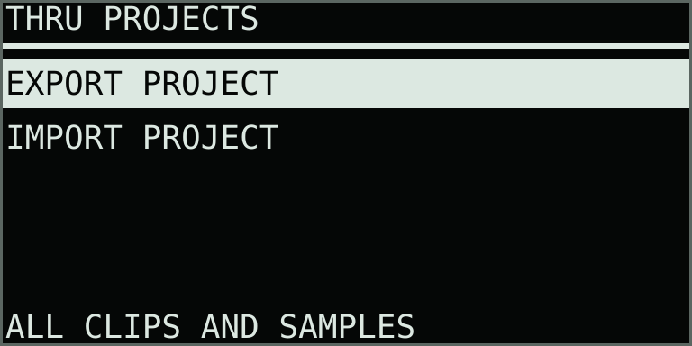
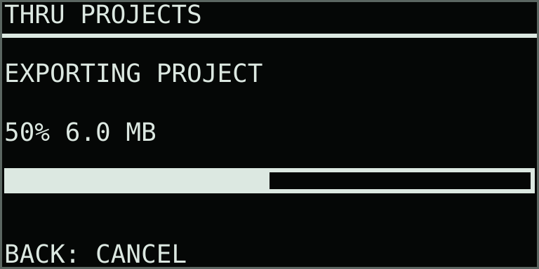
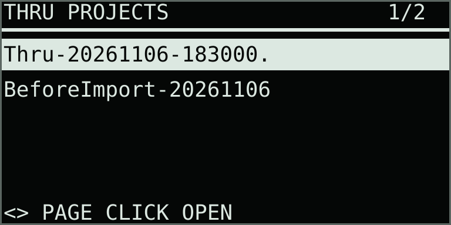
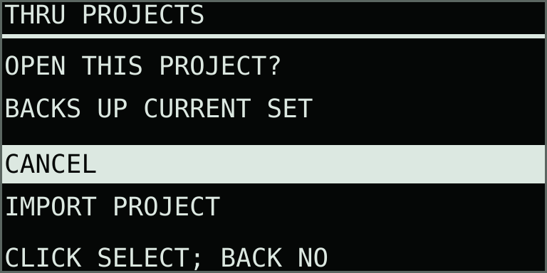

Save · transfer · reopen
Projects and portable backups
A .thru project is one file containing the complete clip and chain bank, instrument settings, slice edits and every sample those clips and Bank pads use. Recordings and imported library samples travel together.
Use project export and import for backups and transfers between devices. Download an exported file to the computer through Schwung Manager to keep a copy away from Move.
Open Capture + Menu, scroll down to Projects (9/9) and click the main encoder. Use the main encoder or Up/Down to choose an action. Finish recording and resolve any save error before starting. Playback stops while a project is prepared.

What the file contains
| Content | Included |
|---|---|
| Performance | All 64 clip slots, recorded notes and control motion, overdub takes, saved chains and transition settings. |
| Instrument | Modes, engine assignments, per-part and Bank-pad settings, envelopes, stack paths, effects and mix settings. |
| Slices | Edited boundaries, imported marker maps, labels and pre-roll. |
| Audio | Every referenced lane and Bank sample, including sources from the library. A shared source is stored once. |
Device MIDI configuration and Custom controller profiles stay with the destination Move when a project is opened. Project archives include referenced samples. Older recordings that are no longer assigned to any clip remain in their recording folders on Move.
Export a project backup
- Open Projects and choose Export Project.
- Thru saves the current settings and waits for referenced recordings to finish saving.
- Watch the progress display. Back cancels the operation.
- After Project Exported, find the timestamped
.thrufile in Thru Projects inside Move’s Samples folder.

Files are named automatically, for example Thru-20261106-183000-123456.thru. You can rename a file on the computer or in Schwung Manager’s Files page; keep its .thru extension. Exports are versioned ZIP64 containers, readable by standard ZIP tools, with samples stored at their original quality.
Download or upload with Schwung Manager
Open Thru Projects in Schwung Manager’s Files page while Move is reachable on your network. If you use an IP address for Manager, open its Files page and browse to the same folder:
/data/UserData/UserLibrary/Samples/Thru Projects- Use a file’s Download action to keep a backup on the computer.
- Use Upload in this folder to put a
.thruproject onto Move. - Open Projects → Import Project again to refresh the list after uploading.
Schwung Manager provides the file transfer. Thru itself creates and opens the project archive; no Schwung source modification or additional software on Move is required.
Restore or import a project
- Place the
.thrufile in Thru Projects. - Open Projects → Import Project, choose the file and click. Use Left/Right for another page of files.
- The confirmation starts on Cancel. Choose Import Project and click to proceed.
- Thru validates and stages the archive, then creates a
BeforeImport-….thrubackup of the current project. - After Project Imported, click to exit, then reopen s3g Thru. The imported project loads with its own sample copies.


After reopening, check the restored lanes and filled Bank pads before removing any backup.
The current-project backup must succeed before import activates. If it reports a missing source, restore or replace that source first.
Imported projects use separate data folders. Their samples are copied into those folders; opening a project keeps the previous project’s files intact. Thru recalls the active project the next time takeover opens. To return to the previous project, import its BeforeImport backup.
If an operation fails
| Message or situation | Action |
|---|---|
| Finish Record / Save | Finish recording, wait for Saved, or resolve a failed Bank take, then try again. |
| Sample Missing | Restore or replace the missing source in its clip before exporting. Export needs every referenced sample. |
| Not Enough Space | Make room for the imported audio and the current-project backup. Keep copies of recordings before removing files. |
| Invalid or unsupported project | Use the original complete export. Damaged archives and unsupported format versions are rejected before activation. |
| Import Commit Failed | The staged project files remain separate. Reopen Thru to check which complete project is active; keep the BeforeImport backup. |
| No files found | Check the folder and .thru extension, finish the upload, then reopen the import browser. |
Project export/import is available in s3g Thru 0.30.0 and newer. Older firmware cannot open .thru files; retain a compatible backup when planning a return to an older version.
Saved and Project Exported appear only after the required file and directory flushes succeed. Keep Move running while saving, exporting or importing.